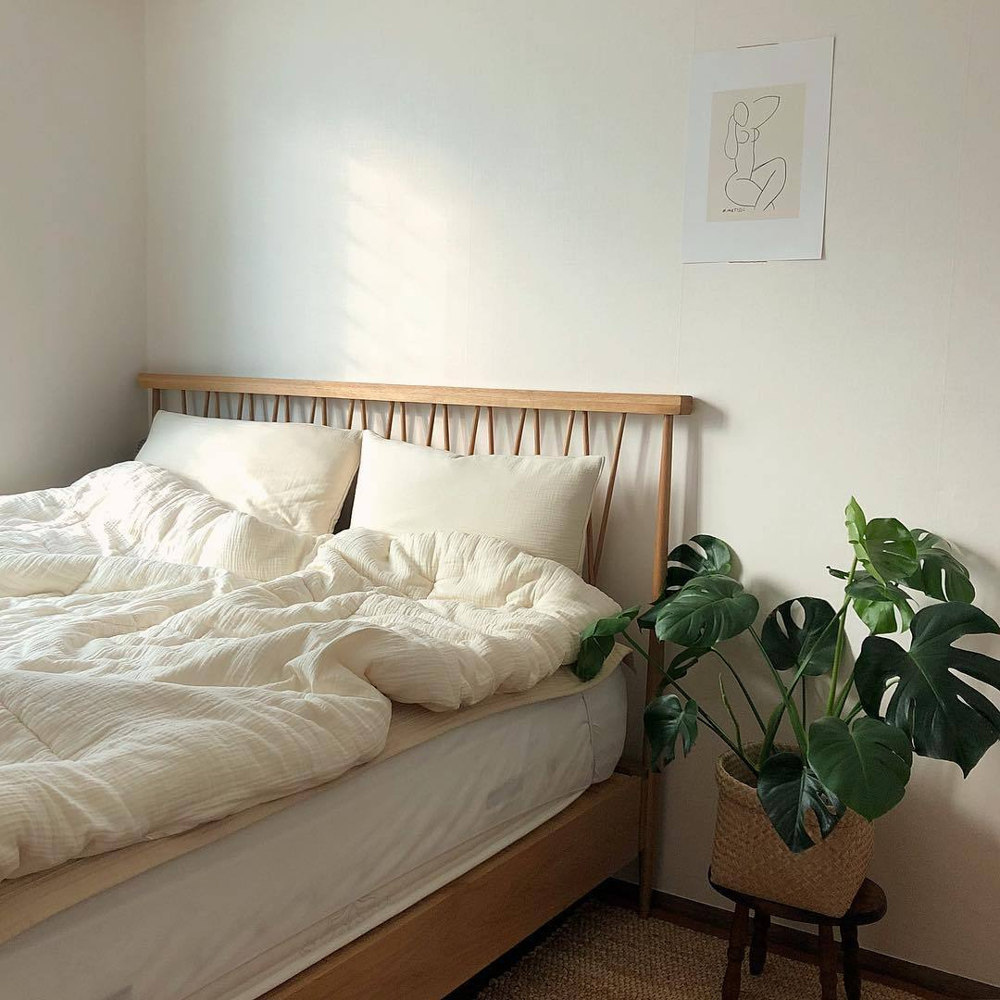

My Favorite Place:
Beds (occasionally), or other places I can fall asleep.

- Bed at home
- The bus
- Other people's beds
- Standing up anywhere

Facts About Sleep
- The record for the longest period without sleep is 18 days, 21 hours,
40 minutes during a rocking chair marathon. The record holder reported
hallucinations, paranoia, blurred vision, slurred speech and memory
and concentration lapses.
- It's impossible to tell if someone is really awake without close medical supervision.
- People can take cat naps with their eyes open without even being aware of it.
- Anything less than five minutes to fall asleep at night means you're sleep deprived.
The ideal is between 10 and 15 minutes, meaning you're still tired enough to
sleep deeply, but not so exhausted you feel sleepy by day.
- A new baby typically results in 400-750 hours lost sleep for
parents in the first year
- One of the best predictors of insomnia later in life is the development
of bad habits from having sleep disturbed by young children.
- The continuous brain recordings that led to the discovery of
REM (rapid eye-movement) sleep were not done until 1953, partly
because the scientists involved were concerned about wasting paper.
BACK